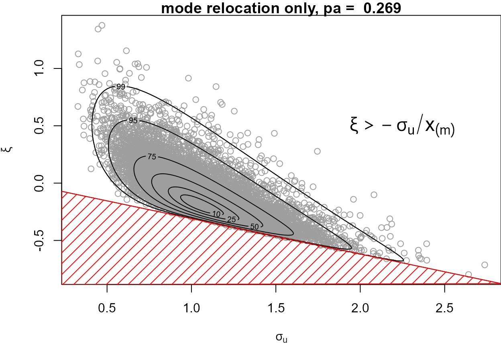
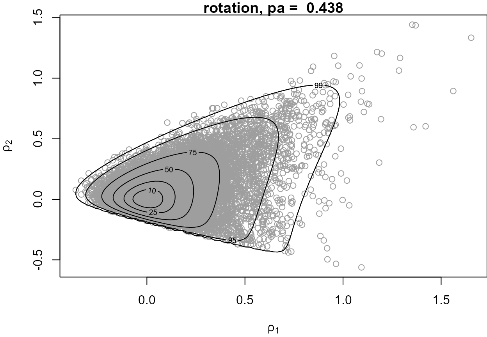
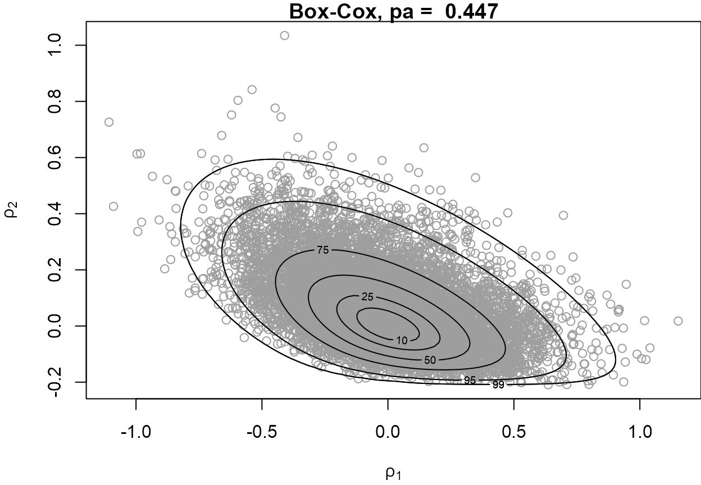
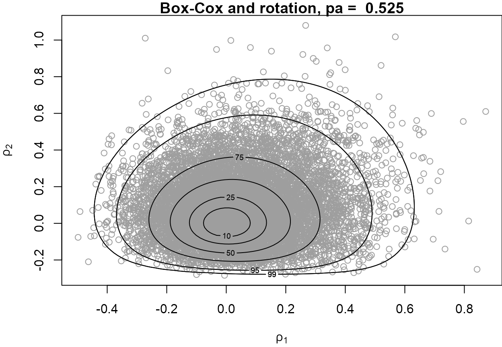

EVA 2021 R Workshop: revdbayes
Paul Northrop, p.northrop@ucl.ac.uk
Source:vignettes/EVA2021revdbayes.Rmd
EVA2021revdbayes.RmdHow did revdbayes start?
- I needed to sample quickly and automatically from
many EV (generalised Pareto) posteriors
-
threshr:
threshold selection based on
- out-of-sample EV predictions
- leave-one-out cross-validation
- wanted to account for parameter uncertainty
- wanted to avoid MCMC tuning and convergence diagnostics
What does revdbayes do?
- Direct sampling from (simple) EV posterior distributions
- Has similar functionality to evdbayes
| evdbayes | revdbayes | |
|---|---|---|
| method | Markov chain Monte Carlo (MCMC) | ratio-of-uniforms (ROU) |
| tuning | required | largely automatic |
| sample | dependent | random |
| checking | yes | no |
Ratio-of-uniforms method
\(d\)-dimensional continuous \(X = (X_1, \ldots, X_d)\) with density \(\propto\) \(f(x)\)
If \((u, v_1, \ldots, v_d)\) are uniformly distributed over
\[ C(r) = \left\{ (u, v_1, \ldots, v_d): 0 < u \leq \left[ f\left( \frac{v_1}{u^r}, \ldots, \frac{v_d}{u^r} \right) \right] ^ {1/(r d + 1)} \right\} \]
for some \(r \geq 0\), then \((v_1 / u ^r, \ldots, v_d / u ^ r)\) has density \(f(x) / \int f(x) {\rm ~d}x\)
Acceptance-rejection algorithm
- simulate uniformly over a \((d+1)\)-dimensional bounding box \(\{ 0 < u \leq a(r), \, b_i^-(r) \leq v_i \leq b_i^+(r), \, i = 1, \ldots, d \}\)
- if simulated \((u, v_1, \ldots, v_d) \in C(r)\) then accept \(x = (v_1 / u ^r, \ldots, v_d / u ^ r)\)
Limitations
- \(f\) must be bounded
- \(C(r)\) must be ‘boxable’
Increasing efficiency
\[ p_a(d, r) = \frac{\int f(x) {\rm ~d}x}{(r d + 1) \, a(r) \displaystyle\prod_{i=1}^d \left[b_i^+(r) -b_i^-(r) \right]} \]
- Relocate the mode to zero (hard-coded into rust)
- Choice of \(r\) (\(r = 1/2\) optimal for zero-mean normal)
- Rotation (\(d > 1\)): the weaker the association the better
- Transformation: symmetric better than asymmetric
(EV posteriors can exhibit strong dependence and asymmetry)
- rust R package
- Introduction to rust vignette
R exercises 1
- 1D normal
- 1D log-normal
- 2D normal
- 1D gamma
For fun!
Can you find simple (1D) examples that throw
- a warning?
- an error?
Use ?Distributions for possibilities
Summary of ROU and rust
- Can be useful for
- suitable low-dimensional distributions
- for which a bespoke method does not exist
- Box-Cox transformation requires positive variable(s)
- to do: generalise to Yeo-Johnson transformation
- Cannot be used in all cases
- unbounded densities: perhaps OK after transformation
- heavy tails: choose \(r\) appropriately and/or transform
- multi-modal: OK in theory, but need to find global optima
Bayesian EV analyses
- Prior \(\pi(\theta)\) for model parameter vector \(\theta\)
- Likelihood \(L(\theta \mid \mbox{data})\)
- Posterior \(\pi(\theta \mid \mbox{data})\) via Bayes’ theorem \[ \pi(\theta \mid \mbox{data}) = \frac{L(\theta \mid \mbox{data}) \pi(\theta)}{P(\mbox{data})} = \frac{L(\theta \mid \mbox{data}) \pi(\theta)}{\int L(\theta \mid \mbox{data}) \pi(\theta) \,\mbox{d}\theta} \]
- Simulate a large sample from \(\pi(\theta \mid \mbox{data})\), often using MCMC
GP model for threshold excesses 1
Negative association + asymmetry \(\phantom{\xi + \sigma / x_{(m)}}\)

GP model for threshold excesses 2
Rotation about the MAP estimate based on the Hessian at the MAP \(\phantom{\xi + \sigma / x_{(m)}}\)

GP model for threshold excesses 3
Box-Cox transformations of \(\phi_1 = \sigma_u > 0\) and \(\phi_2 = \xi + \sigma / x_{(m)} > 0\)

GP model for threshold excesses 4
Box-Cox first then rotate \(\phantom{\xi + \sigma / x_{(m)}}\)

Other models in revdbayes
- GEV for block (annual?) maxima
- Order statistics (OS): largest \(k\) observations per block
- Non-homogeneous point process (PP) for threshold exceedances
- approximates binomial for threshold exceedance and GP for excesses
- GEV parameterisation: \((\mu, \sigma, \xi)\)
- choice of block length affects posterior sampling efficiency
R exercises 2
-
GP and binomial-GP
- compare ROU posterior sampling approaches
- posterior predictive model checking
- predictive inference
- PP: sampling efficiently from the posterior
-
GEV: compare
revdbayesandevdbayes
Options to experiment
- changing threshold
- playing with function arguments
Reflections
Limitations
- Very simple EV models
- ROU efficiency drops with number of parameters
Current uses
- threshr Threshold Selection and Uncertainty for Extreme Value Analysis
-
mev
-
lambdadep(): a bivariate dependence function (many posterior samples required) -
tstab.gpd(): threshold stability plot
-
- Estimation of the extremal index using the \(K\)-gaps model
Resources
-
rust
- Introduction
- When can rust be used?
- Wakefield et al. (1991) Efficiency of the ROU method
-
revdbayes
- Introduction
- Posterior predictive inference
- Stephenson (2016) Bayesian EV analysis review
- Northrop and Attalides (2016) Certain improper priors should not be used!
- threshr